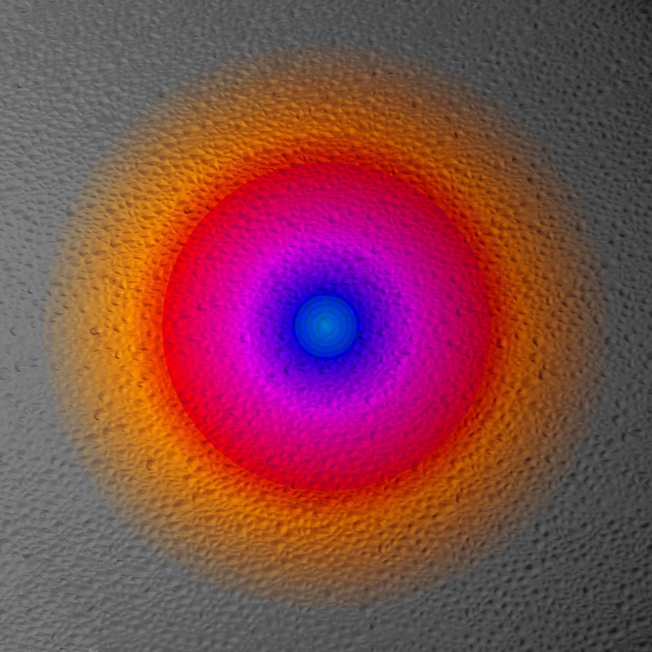

- Ты должен иметь возвышенную душу,
- не поникающую к земле...
- Мейстер Экхарт
- не поникающую к земле...
В начале ХХI века Художник охладел к земным реалиям и обратил своё внимание на небо и космическое пространство. Не много открывает Небо человеческим глазам: хоть и велик Космос, и наполнен мириадами тел, но формы этих тел поразительно однообразны: это шары или спиралевидные сгустки звездной пыли. Существуют также виртуальные линии — орбиты звезд, планет, комет... Всё это — круги или производные от круга: эллипсы, овалы, параболы...
Глядящий на небо видит меньше, чем наблюдающий землю; он видит мало, но прозревает много. Он слышит голос молчащей стихии, он постигает смысл универсальной космической формы — круга и шара.
Круг — это не тело, это Свет, Слово, Альфа и Омега. Блик света, прошедшего сквозь прозрачную ткань Пустоты. Он не имеет четких контуров — он нематериален.
Зрелище Света по-разному отражается в зеркале души: То рассыпается золотыми лучами во все концы Вселенной, согревая душу надеждой.
То превращается в сверхсветлый мрак, поглощая всё внешнее и всё материальное, погружая душу в немоту.
Порой этот яркий круг света внушает подсознательный страх глубиной своей синевы в сочетании с пурпуром и пламенем Божьего гнева.
Страшен Бог в великом сонме святых,
Страшен Он для всех окружающих Его (Пс.88:8)

Когда Божий гнев, как то положено, сменяется милостью — Свет становится спокойным и ласковым:
Не до конца гневается, и не вовек негодует. (Пс. 102:9)
В этой божественной доброте есть что-то мягкое и человеческое, даже сладкое, как суды Господни, которые слаще мёда и капель сота (Пс.18:11).
Колорит этой картины — усыпляющий, как колыбельная песня; его сладость и музыкальность ещё усиливается сходством шестиугольной структуры с пчелиными сотами.
Но так уж устроена жизнь — после приятного сна наступает суровое пробуждение. Оно появляется, как тусклый свет сквозь густую решетку из ромбов или квадратов. Так пробуждается разум, очарованный странствиями во Вселенной и желающий разгадать её тайны.

Возможно ли это в принципе? Рассуждая логически — невозможно; ведь мы находимся внутри Вселенной и не можем выйти за её пределы, следовательно, лишены возможности охватить её взглядом как Единое и понять, разгадать. Успехи астрономии не приближают нас к раскрытию природы космоса. Тайна становится всё более непроницаемой: она манит и брезжит, как слабый свет сквозь густую решетку.
И наконец, поле зрения превращается в сплошь темное пространство, по которому иногда пролетают какие-то осколки планет или частицы звездной пыли.
«Черное небо»
А может быть, эти следы — гениальные открытия современной астрономии на фоне абсолютного мрака неведения фундаментальных законов Бытия. Например: что такое гравитация?
Художник изобразил её символ весьма доходчиво: непонятная сила разрыхляет материю в некое подобие гравия и притягивает её к себе, вспучивая наподобие сферического сегмента (или вдавливая — смотря откуда падает свет).
Или загадка второго закона термодинамики: вот раскаленная масса железной планеты (или звезды). Она остывает — но куда девается её тепло? А куда уходит свет?
Круг, шар и его производные стали для Художника замкнутой сферой идей, из которой он, кажется, не в силах выйти, как из заколдованного круга. Он меняет местами свет и тьму, помещает темный провал в центр картины, окружает его сеткой с квадратными ячейками; из черной тьмы возникает зелено-пурпурный свет (по всем правилам науки).
Он допускает (в виде исключения) зеленую окраску света, хотя в космосе трудно встретить зеленое иначе, чем на нашей родной планете, где растет трава у дома — зеленая, зеленая трава...
Затем, как бы соскучившись по зелени, Художник улавливает в космосе небольшой зеленый луч, разбивает его на мелкие квадратики и рассыпает их в организованном беспорядке (соблюдая вертикали и горизонтали). Таким образом, бесплотный луч оказался материализован. Думаю, не случайно эта манипуляция произошла именно с зеленым цветом: ведь он самый «земной» из спектральных цветов.
Картины на космические темы могли бы украсить жилище ортодоксального йога, дзэн-буддиста или даоса, послужить объектом медитации в предназначенные для этого часы. Они могли бы дополнить убранство комнаты слишком делового человека и содействовать нормализации его психического состояния. Уместнее всего они были бы на стенах клуба интеллектуалов как бессловесные гимны Музе математики — родительнице всей современной технической цивилизации и цифрового искусства.
Сергей Лапша виртуозно владеет компьютерной графикой, но — согласитесь со мной — не идет целиком у неё на поводу. Он не соблазняется легкой возможностью создавать сотни причудливых и вычурных композиций с использованием необъятной палитры красок и десятков программных эффектов. Он крепко держит поводья колесницы Феба, не позволяя коням выйти из-под своей воли. Он знает: чем проще символ, тем он многозначительнее и доходчивее до зрителя. Ведь самые простые архетипы форм хранятся в нашем подсознании; фиксируя их зрением, мы вспоминаем их значение — и этот процесс познания (узнавания) доставляет нам эстетическое удовлетворение.
Создавая данную серию, Художник не ограничивается сотворением образа — он открывает доя себя и для зрителя фундаментальные законы космоса и визуализирует их в графике, не выходя за пределы принятой здесь основной конфигурации — круга. Пространство не пусто, оно заполнено энергетическими полями и само представляет собой огромное поле, где действуют законы Лобачевского и Эйнштейна (кроме тех, которые нам ещё не известны). Это пространство может сворачиваться спиралью и разворачиваться параболой.
Оно вмещает в себя мир и антимир.
В нем нет капель воды и морских волн, но человеческое воображение назвало неких обитателей космоса «Магеллановыми облаками», — они так похожи на формы облаков в небе нашей планеты.
Хоть и непостижима Бесконечность для нашего ограниченного разума, но жаждет душа созерцать ее образ, свободный от житейской суеты, чистый и прекрасный.
О горнем помышляйте, а не о земном.
(Ап. Павел. Послание Колоссянам 3:2)
Л. Миронова,
2010